| ✅ | ✅ | ✅ | ✅ | ✅ | ✅ |
|---|
Infrared Sensor¶


- class InfraredSensor(port)¶
LEGO® Powered Up Infrared Sensor.
- Parameters:
port (Port) – Port to which the sensor is connected.
- awaitdistance() int: %¶
Measures the relative distance between the sensor and an object using infrared light.
- Returns:
Distance ranging from 0% (closest) to 100% (farthest).

Examples¶
Measuring distance, object count, and reflection¶
from pybricks.pupdevices import InfraredSensor
from pybricks.parameters import Port
from pybricks.tools import wait
# Initialize the sensor.
ir = InfraredSensor(Port.A)
while True:
# Read all the information we can get from this sensor.
dist = ir.distance()
count = ir.count()
ref = ir.reflection()
# Print the values
print("Distance:", dist, "Count:", count, "Reflection:", ref)
# Move the sensor around and move your hands in front
# of it to see what happens to the values.
# Wait some time so we can read what is printed.
wait(200)